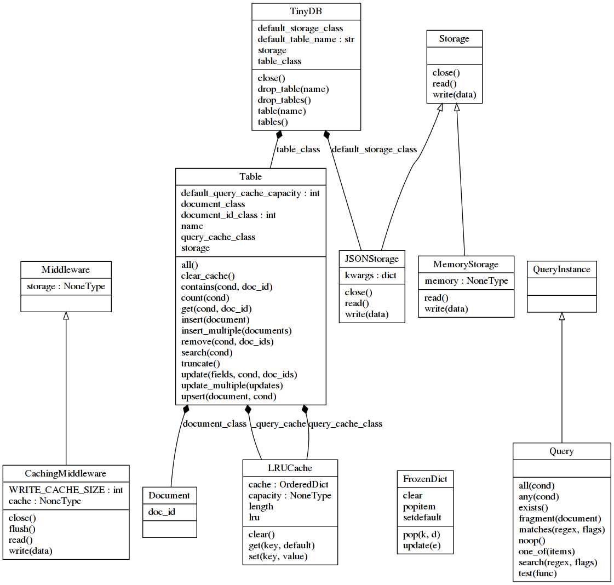

Рассмотрение абстракций и их взаимодействия библиотек встраиваемых БД

Часто возникает желание иметь простейшую архитектуру сервиса или программы, в которой будут отсутствовать избыточные компоненты и межсетевое взаимодействие. Это ощутимо сокращает силы и время на их реализацию и поддержку. Чтобы придерживаться такого подхода нужно уметь подбирать подходящие решения: технологии, библиотеки, программное обеспечение и т.д.
Подбор может быть достаточно прямолинейным - формирование списка подходящих решений по их применяемой области , но, очевидно, что такой список окажется слишком большим и перенасыщенным. Сегодня век информации и потому её объём вокруг нас огромен, который человек физически не способен усвоить даже за всю жизнь. Осознание этой проблемы объема естесвенным образом приводит к формированию интеллектуального подхода - применения ряда аналитических практик, приводящих к сокращению кол-ва информации, способной быть усвоенной человеком в сроки, соответствующие решаемой задачи, и сохранению уровня её качества, релевантности. Т.е. подход, сокращающий список подходящих решений без погружения в исходной код до приемлимого и, в конечном итоге, одного решения.
В данной статье применяется ряд таких практик, на примере подбора библиотек встраиваемых БД. Как таковая решаемая задача отсутствует, потому нет необходимости придти к выбору одной из них.
Пару слов о встраиваемых БД: при реализации эксперементальных программ удобно иметь файл с подходящей структурой данных для их сохранения и наличия к нему программного интерфейса базовых операций CRUD, поиска, возможно индексации. Приложение практик к ним прольет больше света на выбор оптимального хранения, оперирования данными в описанном случае.
Цели
- Сформировать список библиотек встраиваемых БД для рассмотрения.
- Сформировать список аналитических практик.
- Определить вспомогательные инструменты по анализу исходного кода библиотек, лежащих в основе практик.
- Применить каждую практику отдельно по каждой БД из списка, описав преимущества и недостатки.
Список БД
В список можно внести огромное кол-во разных вариаций бибиотек, как упоминалось ранее, но мы сократим его до таковых, которые могут быть использованы на практике в будущем(тут конечно каждый сам для себя должен представить, что именно может быть ему полезным, на чем он специализирется или к чему хотел бы приблизиться в своей деятельности). В таких вопросах стоит прислушаться к интуиции.
Помимо прочего, библиотеки должны быть написаны на чистом питоне для чтения исходного кода и техничской возможности анализа вспомогательными инструментами. Основной источник для поиска - Github.
Список практик
Приведем их список, применяемых для получения информации по каждой из библиотек, дающей как бы взгляд со стороны на сложность их внутреннего устройства без погружения в исходный код. Перечисление практик идет в порядке от общего к частному, т.е. самая первая описывает общую картину наименьшим кол-вом деталей и степенью погружения, при этом больше всех затрагивает высокоуровневые асбтракции, на которых бибилотеки базируются:
- Построение графа зависимостей модулей.
- Построение диаграммы классов.
- Вычисление цикломатической сложности.
- Построение графа вызовов базового исполняемого сценария и упрощенной диаграммы их последовательности. Эта практика более близка к реальному использованию библиотеки, т.к. содержит ряд её вызовов, выполнямых повседневно в реальной работе:
- Создание БД.
- Запись данных.
- Обновление данных.
- Получение, поиск данных.
Далееа вот сопровождающее описание будет частным и самым ценным в проделанной работе.
Вспомогательные инструменты
Перечисление инструментов с общим описанием по каждому, чтобы в дальнейшем было понятно, для чего мы их используем и что от них ожидается.
Ресурс, содержащий поддерживаемый список инструментов , по всевозможному анализу кода.
Pyreverse
https://www.logilab.org/blogentry/6883 https://pylint.org/
Pyreverse analyses Python code and extracts UML class diagrams and package depenndencies.
Утилита является частью пакета pylint. Как видно из цитаты, помогает автоматически построить диаграммы классов и импортируемых зависимостей. Со второго мы в дальнейшем и будем начинать рассмотрение, т.к. оно является построением наиболее широкой картины того, как БД программно описана, какие верхнеуровневые компоненты содержит и как они взаимосвязаны.
Построене диаграмм классов даст нам уже более полное видение абстракций, которые содержит БД, и их взаимодействия между собой. При этом утилита позволяет указывать уровень глубины сканирования исходного кода БД.
Pycallgraph
https://pycallgraph.readthedocs.io/en/master/
Понятная альтернатива pyreverse. Строит граф вызовов указанного исполняемого сценария, поэтому необходимо в нем иметь вызовы, покрывающие по нисходящей(от высокоуровневых выовов к низкоуровневым) наибольшую часть абстракций библиотеки.
UML Sequence diagram
Prospector
https://github.com/PyCQA/prospector
Некий аггрегатор анализирующих инструментов. Может дать информацию сразу по многим аспектом. Теоретически выявляет места, на которые сразу стоит обратить внимание.
Полезно использовать при сравнении полученной информации по множеству библиотек в случае подбора более подходящей под решение.
Pylama
https://github.com/klen/pylama
Альтернатива prospector менее популярная , судя по показателям в Гитхабе.
Vulture
https://github.com/jendrikseipp/vulture
Динамический поисковик неиспользуемого кода. Полезно для видения, насколько исходный код бибилиотеки находится в актуальном состоянии, в каких углах запылилась.
Pydeps
https://github.com/thebjorn/pydeps.
Альтернатива использования pyreverse для построения графа зависимостей с генерацией на осное формата .dot программного пакета Graphviz. Изображение графа генерируется разными цветами, логика в этом присутствует, но для нас она значения не имеет, поэтому не стоит обращать на это внимание.
Radon
https://radon.readthedocs.io/en/latest/
McCabe
https://github.com/PyCQA/mccabe
Рассмотрение
Построение графа зависимостей
На графах не отображаются модули стандартной бибилиотеки, а только лишь внешние зависимости. Сам сканируемый пакет отображается в именованных прямоугольных рамках, очерчивающих его модули, отображаемые окружностями. Внешние зависимости отображаются в виде изображений папок с их именами.
Такой граф дает хорошее визуальное представление
Dataset
pydeps --noshow --cluster --keep-target-cluster --rmprefix pydeps. venv/lib/python3.8/site-packages/dataset

TinyDB
pydeps --noshow --cluster --keep-target-cluster --rmprefix tinydb. venv/lib/python3.8/site-packages/tinydb

Sqlitedict

Как видно эта библиотека не имеет никаких зависимостей и даже не скомпанована как пакет, все абстракции содержатся в одном модуле в 550 строк кода. Всего 2 абстракции и 1 основная.
Peewee-kv, peewe-dataset
По факту это два модуля пакета playhouse функционал которых реализован на основе библиотеки peewee, поэтому они рассматриваются вместе и сканируются единой командой.
pydeps --include-missing --max-bacon=1 --noshow --cluster --keep-target-cluster --rmprefix playhouse. -T png -o source-deps.png venv/lib/python3.8/site-packages/playhouse
Команда генерирует взаимосвязи модулей из сканируемого пакета которые нас не интересуют. поэтому следующее изображение отредактировано вручную, а вот ссылка на исходное для сравнения.
{kind=link}
Как видно kv содержит меньше связей по сравнению с dataset.
Построение диаграммы классов
Построение графа вызовов
Цикломатическая и прочие сложности
Заключение
Dataset 1.4.1
Надстройка SQLAlchemy, что сразу говорит о многообразии абстракций, состоящих из двух слоёв: SQLAlchemy ORM, SQLAlchemy Core.
Сама надстройка объявляет 2 основные абстракции: Database, Table описанных в 2х модулях суммарно на 1025 строк кода, имея, тем самым, низкий порог входа понимания их диаграммы взаимодействия.
prospector --with-tool vulture
Анализ кода.
from pycallgraph import PyCallGraph
from pycallgraph.output import GraphvizOutput
import dataset
with PyCallGraph(output=GraphvizOutput()):
db = dataset.connect('sqlite:///:memory:')
table = db['sometable']
table.insert(dict(name='John Doe', age=37))
table.insert(dict(name='Jane Doe', age=34, gender='female'))
john = table.find_one(name='John Doe')
Граф вызовов. Содержит очень большой набор вызовов и множества модулей.
{kind=link}
pyreverse -AS -f ALL -o png venv/lib/python3.7/site-packages/dataset
Полученная диаграмма классов. Очень громоздкая диаграмма с большим кол-вом классов и взаимосвязей. Сказывается базирование на sqlalchemy.
TinyDB 4.3.0
prospector --with-tool vulture
Анализ кода.
from pycallgraph import PyCallGraph
from pycallgraph.output import GraphvizOutput
from tinydb import TinyDB, Query
from tinydb.storages import MemoryStorage
with PyCallGraph(output=GraphvizOutput()):
db = TinyDB(storage=MemoryStorage)
User = Query()
db.insert({'name': 'John', 'age': 22})
db.insert({'name': 'Van', 'car': 'volvo'})
db.search(User.name == 'Van')
Граф вызовов. Содержит крошечный набор вызовов.
{kind=link}
pyreverse -AS -f ALL -o png venv/lib/python3.7/site-packages/tinydb
Полученная диаграмма классов.
{kind=link}
Sqlitedict 1.7.0
-
Минимализм, выраженный 1м модулем из 550 строк кода.
-
Всего 2 абстракции и 1 основная, т.е. для взаимодействия с данными используется SqliteDict, предоставляющий соответствующий интерфейс, который обращается к кастомному SqliteMultithread. Этот объект уже напрямую выполняет операции в БД.
-
На уровне БД схема таблиц(они же словари) организована наипростейшим образом без возможности кастомизации. Ключ объявлен строковым, а значение бинарным типами. Таким образом на уровне питона неполностью эмулируются возможности словаря.
complex_discount = SqliteDict('db.sqlite') complex_discount[('pencil', 'case', 'eraser')] = 15 sqlite3.InterfaceError: Error binding parameter 0 - probably unsupported type. -
Автогенерируемый индекс по ключу.
-
Поддержка кастомной сериализации значений
rss = SqliteDict('db.sqlite', encode=xml_encode, decode=xml_decode) -
Поддержка многопоточности.
Следует отметить, что в данной реализации объект-словарь необходимо разделять между потоками.
def job(job_results): k, v = fetch() job_results[k] = v job_results = SqliteDict('db.sqlite') t1 = Thread(target=job, args=(job_results, )) t2 = Thread(target=job, args=(job_results, )) -
Зачем-то оставлен режим создания БД в памяти
:memory:. Было бы логичным его убрать для позиционируемой персистентности словаря. -
Хороший кандидат для быстрого старта и фокусировки на логике работы с данными, но остается неясность в том, как будет вести себя объект-словарь при различных вариациях параметров
autocommit, journal_mode.
Результаты применения общей практики.
Dataset.
Диаграммы.


TinyDB.

